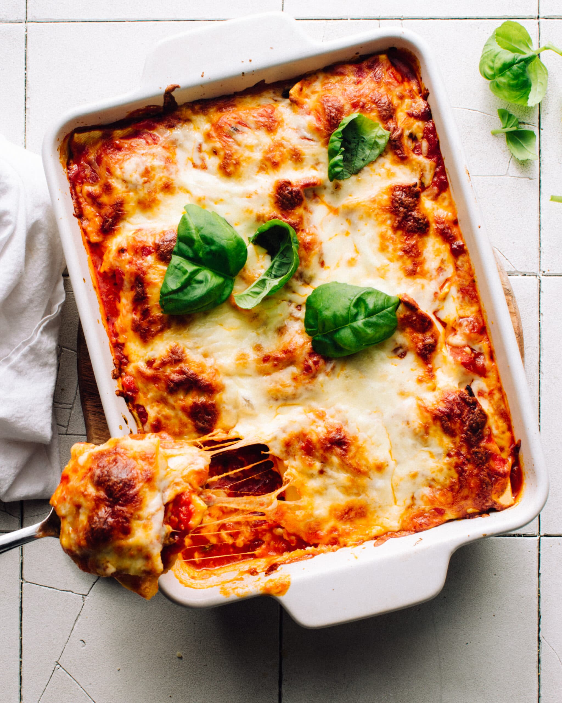

Lasagne

Description
Lasagne are a type of pasta, possibly one of the oldest types, made of very wide, flat sheets.
Either term can also refer to an Italian dish made of stacked layers of lasagne alternating with fillings such as ragu (ground meats and tomato sauce),
vegetables, cheeses (which may include ricotta, mozzarella, and parmesan), and seasonings and spices, like Italian seasoning, such as garlic, oregano and basil.
The dish may be topped with grated cheese, which becomes melted after baking. Typically cooked pasta is assembled with the other ingredients and then baked in an oven.
The resulting baked pasta is cut into single-serving square portions.
Ingredients
- Ground meat
- Onion
- Garlic
- Salt
- Pepper
- Tomato sauce
- Cheese
Steps
- In a Dutch oven, cook sausage, ground beef, onion, and garlic over medium heat until well browned.
Stir in crushed tomatoes, tomato paste, tomato sauce, and water. Season with sugar, basil, fennel seeds, Italian seasoning, 1 teaspoon salt, pepper, and 2 tablespoons parsley.
Simmer, covered, for about 1 1/2 hours, stirring occasionally.
- Bring a large pot of lightly salted water to a boil.
Cook lasagna noodles in boiling water for 8 to 10 minutes.
Drain noodles, and rinse with cold water.
In a mixing bowl, combine ricotta cheese with egg, remaining parsley, and 1/2 teaspoon salt.
- Preheat oven to 375 degrees F (190 degrees C).
- To assemble, spread 1 1/2 cups of meat sauce in the bottom of a 9x13-inch baking dish.
Arrange 6 noodles lengthwise over meat sauce. Spread with one half of the ricotta cheese mixture.
Top with a third of mozzarella cheese slices. Spoon 1 1/2 cups meat sauce over mozzarella, and sprinkle with 1/4 cup Parmesan cheese.
Repeat layers, and top with remaining mozzarella and Parmesan cheese.
Cover with foil: to prevent sticking, either spray foil with cooking spray, or make sure the foil does not touch the cheese.
- Bake in preheated oven for 25 minutes. Remove foil, and bake an additional 25 minutes. Cool for 15 minutes before serving.
- Enjoy!
Return home